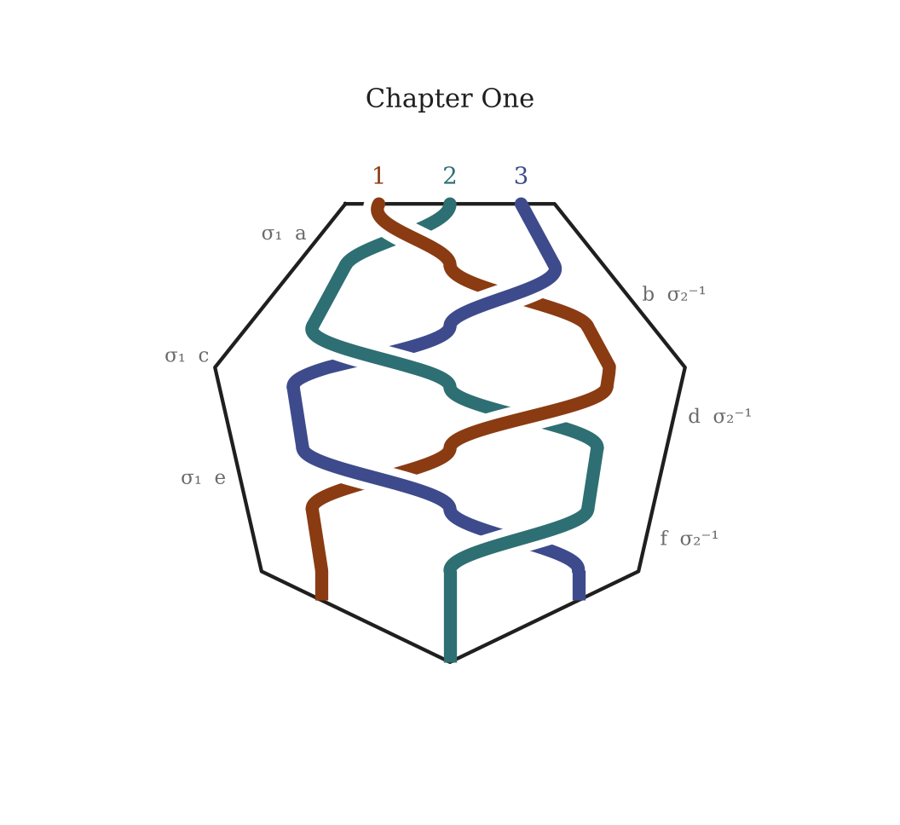
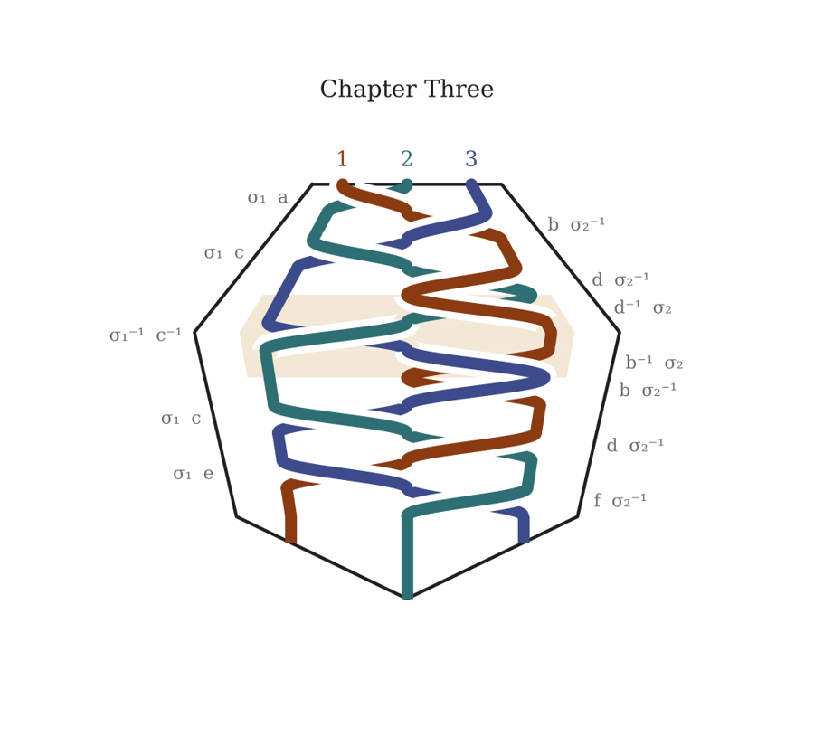
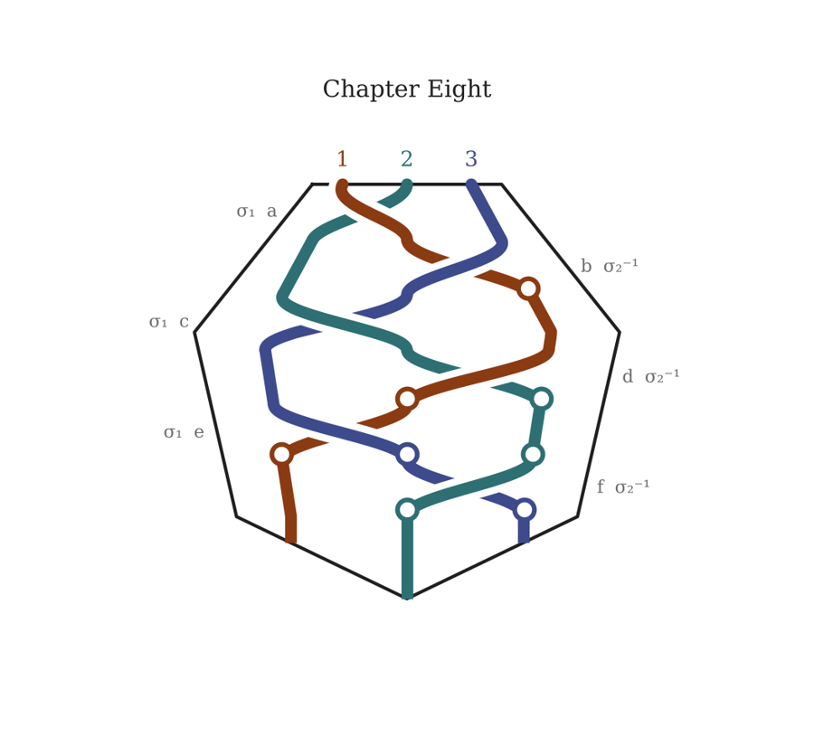

Appendix
The braid
The book is a braid of three strands. Strand 1 is the conversation between the author and the AI; strand 2 is Boi and Gyrl; strand 3 is Victoria and Balthazar, with the 10X Collective carried inside it as a cable.
At each crossing an outer strand passes over the middle one, alternately from the left and from the right, as in a plait. After each crossing the strands are read in their new order, one section from each. Six crossings make one period, and each chapter is one period. When two or more strands end a cycle facing an unresolved obstacle, the weave is undone for half a period and rewoven: the Penelope unweaving, which happens once, in Chapter Three. Where a strand has nothing to say at a crossing, it rests.
In the drawings the strands run from the top of a heptagon to its lower edges. The left strand over the middle is σ₁; the right strand over the middle is σ₂⁻¹. The plait’s word is σ₁ σ₂⁻¹ repeated; the unweaving reverses each crossing, shaded. An open circle marks a rest.
Chapter One · The Manuscript Smells Like Smoke

Braid word: L R L R L R
Checks after b, d and f: at no boundary do two strands end facing an unresolved obstacle (only the Hill, at f). Plain weave.
| Crossing | Order | Sections |
|---|---|---|
| a | 2 1 3 | 2 · II · the forum thread 1 · Opening pitch 3 · I · Monaco |
| b | 2 3 1 | 2 · IV · the DMs 3 · III · the jet, with V · dawn 1 · Perelman; the slow parallel |
| c | 3 2 1 | 3 · VI · the Hill 2 · VII · Boi through Ohio 1 · 10X Collective and the music |
| d | 3 1 2 | 3 · IX · over the Atlantic 1 · The Fates; the Hill’s silence 2 · VIII · Gyrl on the train |
| e | 1 3 2 | 1 · Continuity: Chicago, Oberlin, the darker side 3 · X · the annotation 2 · XII · Connecticut |
| f | 1 2 3 | 1 · Series ending; the hook; notes 2 · XIII · Union Station 3 · XI · the Hill; Clotho goes silent |
Chapter Two · Three Kinds of Awkward

Braid word: L R L R L R
Checks after b, d and f: at b only strand 3 is mid-fight; at d and f nothing is unresolved. Plain weave.
| Crossing | Order | Sections |
|---|---|---|
| a | 2 1 3 | 2 · I · café, first half 1 · Othello; reader participation 3 · II · Push Hands: the wrong shoes |
| b | 2 3 1 | 2 · I · café, second half 3 · II · the fight 1 · Stakes; Homestuck; dropping down |
| c | 3 2 1 | 3 · II · the channel opens 2 · Interstitial · Chapel Street, the call 1 · Café continuity gap; Reyes; Dumas |
| d | 3 1 2 | 3 · III · Thomas’s kitchen table 1 · The fork; 10X roster; the fight; Tai Chi 2 · Interstitial · back in the café |
| e | 1 3 2 | 1 · Thomas, Alma, Sally; the Hill debate 3 · What Thomas did not tell them 2 · IV · the Beinecke desk |
| f | 1 2 3 | 1 · Notes on the fight scene 2 · IV · the reading room 3 · Push Hands, Played |
Chapter Three · The Empty Chair

Braid word: L R L R R⁻¹ L⁻¹ R⁻¹ R L R L R
Check after d fires: strand 2 is hiding in The Concordance with the pursuers still outside, and strand 3 has just met the Tower and the Hierophant inverted, a structural No. The last three crossings are undone (d⁻¹, c⁻¹, b⁻¹), then rewoven (b, c, d) and the period finishes (e, f). The undoing cancels, so the chapter is still one period. The rewoven d does not fire again.
| Crossing | Order | Sections |
|---|---|---|
| a | 2 1 3 | 2 · Chase: noticed 1 · Meredith: the Enneagram 3 · The Bar at The Study |
| b | 2 3 1 | 2 · Chase: herded, running 3 · Magician, Priestess, Star 1 · Claude: the hidden skeleton |
| c | 3 2 1 | 3 · The Tower 2 · The arcade 1 · Meredith: a literal map |
| d | 3 1 2 | 3 · The rest of the reading 1 · Claude: nine stations 2 · The Concordance |
| d⁻¹ | 3 2 1 | 3 · The Hill: the operative 2 · Tea with Reza 1 · Meredith: the stations in order |
| c⁻¹ | 2 3 1 | 2 · Room 12: the argument 3 · The Hill: what did they say 1 · Claude: the Tower and the cards |
| b⁻¹ | 2 1 3 | 2 · Room 12: laying it out 1 · Meredith: the interleaved cut 3 · The Hill: you let them go |
| b | 2 3 1 | 2 · Room 12: SweetVenom 3 · VIII · SweetVenom at midnight 1 · Claude: herding, not following |
| c | 3 2 1 | 3 · VIII · the two messages 2 · Room 12: messages; Kovács; Thursday 1 · Progress; the sign-off |
| d | 3 1 2 | 3 · X · Alma’s car 1 · Meredith: a payoff; SweetVenom 2 · Room 12: the replies |
| e | 1 3 2 | 1 · Claude: the same hotel 3 · X · Alma on the Hill 2 · IX · Reyes moves the session |
| f | 1 2 3 | 1 · SweetVenom; Columbia; Thursday 2 · IX · the pitch; Columbia 3 · The Inside of the Forearm |
Chapter Four · The Vision of the Meal
Braid word: L R L R L R
Checks after b, d and f: no boundary has two strands facing an unresolved obstacle. Plain weave.
| Crossing | Order | Sections |
|---|---|---|
| a | 2 1 3 | 2 · II · the sabar circle 1 · Three centers 3 · I · Orange Street |
| b | 2 3 1 | 2 · II · the montage; the bed 3 · I · the coroner’s report 1 · Balthazar’s agency; tattoo; TPP |
| c | 3 2 1 | 3 · I · the TPP annex 2 · II · favorite stories 1 · The Age of Consent seed |
| d | 3 1 2 | 3 · SweetVenom, Thursday Morning 1 · Marina; air drummer; Coecke 2 · II · the archive; the air drummer |
| e | 1 3 2 | 1 · Meredith: Cocteau/NIN; Thiaroye; the sabar circle 3 · Vienna, Sleeves Rolled 2 · II · Bob Coecke |
| f | 1 2 3 | 1 · Claude: transmission; the archive 2 · II · SweetVenom’s message 3 · Balthazar returns |
Chapter Five · Approaching the Middle of the Middle

Braid word: L R L R L R
Checks after b, d and f. At f strand 2 ends at the door with Gyrl taken, but strand 3 ends with Robin agreeing to go and strand 1 with a candidate agent named; only one strand faces an unresolved obstacle. Plain weave.
| Crossing | Order | Sections |
|---|---|---|
| a | 2 1 3 | 2 · Columbia: looking for a hacker 1 · The braid proposal; the reflection 1 · Answers; Chapter One as a test; cabling 3 · Columbia: Victoria watches them |
| b | 2 3 1 | 2 · Reyes moves the session again 2 · The Morgan: the second B; six hours 3 · The Morgan: Reza’s note 1 · Listening; each chapter one period; the woven draft 1 · Errors as Holy Denying |
| c | 3 2 1 | 3 · Riverside Drive: the seventh chair 2 · Riverside Drive: in the coats 1 · Chapter Five; the scene at the door 1 · Victoria Ashford Crane; Oberon on the Hill |
| d | 3 1 2 | 3 · The Hill: the collective 3 · Van Brunt Street: the operative waits 1 · Not so, but true 1 · Does Oberon call Thomas and Alma? 2 · Saltmarsh: the wall 2 · Saltmarsh: the session |
| e | 1 3 2 | 1 · Presentation is not chronology 3 · Thomas hears the music, then the absence 3 · The Hill: the traveler 2 · Van Brunt Street: the abduction |
| f | 1 2 3 | 1 · Titania’s visit 1 · Who is the agent? 2 · The door 3 · Faerie: the king and Robin 3 · The same wood; the morning after 3 · The call that rang once |
Chapter Six · Leaving the Middle of the Middle

Braid word: L R L R L R
Checks after b, d and f. At b strand 2 is in the queen’s wood, but strand 3 has only begun to wait and strand 1 is mid-plot rather than stuck. At d and f nothing is unresolved. Plain weave; strand 3 rests twice.
| Crossing | Order | Sections |
|---|---|---|
| a | 2 1 3 | 2 · Robin; the rhythm; over the Hill 1 · Gyrl, Faerie and the egg 1 · The research note 1 · Titania releases Gyrl; pronouns 1 · Getting to the session 1 · New York; the second reschedule 3 · The Lowell: the tattoo, told |
| b | 2 3 1 | 2 · Reyes and Cass on the phone 3 · Kovács chooses 1 · The Nile as the grandmother’s dream 1 · Foundling’s Keeper is real 1 · The Oxford concert 1 · The memorabilia wall; a future murder 1 · The session moves to Chapter Five; the ally |
| c | 3 2 1 | 3 · rest 2 · Harpreet loses five hours 1 · The ally is Puck 1 · Write the new draft 1 · Murf 1 · Plotting New York; 10X 1 · Vectors; going mainstream |
| d | 3 1 2 | 3 · The lemma; the third invariant 1 · The Voynich in Faerie 1 · Weeping Angels 1 · The reporter; the frame as closure 1 · The influencer 1 · Cass leaks the session 2 · Faerie: the bower, the release |
| e | 1 3 2 | 1 · Goro Kato 1 · The homage 1 · Both vignettes 1 · Write everything 1 · The cello; the fuss; the sponsor 3 · rest 2 · Robin’s hollow: the book |
| f | 1 2 3 | 1 · Twin scenes; the meeting at the concert 1 · A natural future 1 · Walls coming down 1 · Goro is killed 1 · The notebooks; why Gyrl refuses the models 1 · Write all the scenes 2 · Three days late; Goro 3 · Robin’s report |
Chapter Seven · The Second Shock

Braid word: L R L R L R
Checks after b, d and f. At d the Second Shock lands in strand 2 (Episode 412), while strand 3 rests; a rest is never an obstacle. Plain weave.
| Crossing | Order | Sections |
|---|---|---|
| a | 2 1 3 | 2 · NEW · For a friend (placeholder; the author’s lead) 1 · Boi, Gyrl and the Fae; the non-human intelligences 3 · The operative and Nell |
| b | 2 3 1 | 2 · Tribeca: Goro wants the music 3 · rest 1 · Göbekli Tepe |
| c | 3 2 1 | 3 · The Hill: the one life 2 · Tribeca: the edit 1 · Update the manuscript 1 · Maas dies at the concert |
| d | 3 1 2 | 3 · rest 1 · Edward Kelley 2 · Episode 412 |
| e | 1 3 2 | 1 · Maas, Kelley’s descendant 3 · The inference; Kovács burned 2 · rest |
| f | 1 2 3 | 1 · The program; the mirror 1 · Reza takes the mirror 2 · rest 3 · rest |
Chapter Eight · Bearing the Unpleasant Manifestations of Others

Braid word: L R L R L R
Checks after b, d and f. The twins cross in the first three crossings; then the strands fall silent, one full bar of rest before the concert. Plain weave.
| Crossing | Order | Sections |
|---|---|---|
| a | 2 1 3 | 2 · Boi: we have to be there 1 · Doors; the AI talks to others 3 · Victoria: we have to be there |
| b | 2 3 1 | 2 · Boi: he cut it 3 · Victoria: our names 1 · rest |
| c | 3 2 1 | 3 · Victoria: Kiki 2 · Boi: we filled the room 1 · SweetVenom; which forums; the sharded network |
| d | 3 1 2 | 3 · Balthazar calls Kiki 1 · rest 2 · rest |
| e | 1 3 2 | 1 · rest 3 · rest 2 · rest |
| f | 1 2 3 | 1 · F1R3FLY under its own name 2 · rest 3 · rest |
Chapter Nine · The Future Pulls us Towards It
Braid word: L R L R L R
The concert stands before the period as the closure, where the three strands are joined. Checks after b, d and f find no two strands stuck. Plain weave, then the coda.
| Crossing | Order | Sections |
|---|---|---|
| a | 2 1 3 | 2 · The shared document 1 · The concert as a strobe 1 · The wall of screens; first contact 1 · Not only the Fae 1 · The Collective at the concert 3 · The morning after: the price |
| b | 2 3 1 | 2 · Nine days after: Goro; the notebooks 3 · rest 1 · Thomas and Anna, older 1 · Reyes and Coecke at the sound desk 1 · Presence of mind 1 · Twelve feeds |
| c | 3 2 1 | 3 · Reza boards for Istanbul 2 · The box; eleven notebooks 1 · The tools 1 · The sticks; Boi’s father 1 · Balthazar and the father 1 · Slovenia and the flute |
| d | 3 1 2 | 3 · rest 1 · They didn’t know; the pipe 1 · Orange Street and the father 1 · Half a conversation; two conversations at once 1 · Mouthing the words 2 · The article; I know one |
| e | 1 3 2 | 1 · Three visits 1 · Write the concert 1 · Why Puck goes 1 · How the change spreads 1 · The story wants to be new 3 · SweetVenom says yes 2 · NEW · Istanbul (placeholder; Book Two) |
| f | 1 2 3 | 1 · Write the two scenes 1 · Book One 1 · The editor’s review 1 · … 1 · The full rewrite 1 · … 1 · … 1 · … 1 · Stillness, spaciousness; Kiki’s English 1 · Selflessness is not forgetting 1 · … 1 · … 1 · … 1 · … 1 · … 1 · … 1 · Seventeen endings; the cards; the grey car 1 · Braid-group diagrams; the Enneagram 1 · The braid at the head of each chapter 1 · A plait, not a twist 1 · The book as a website 2 · rest 3 · rest |
The cable
The 10X Collective travels inside strand 3: the Hill scenes, Thomas at the kitchen table, Alma in the car. It crosses wherever Victoria and Balthazar cross. Opened, strand 3 would fray into three, and the braid would have five strands and a period of ten crossings. Not applied here.
Placeholders remaining
- Chapter 6 · For a friend (placeholder; the author’s lead)
- Chapter 9 · Istanbul (placeholder; Book Two)